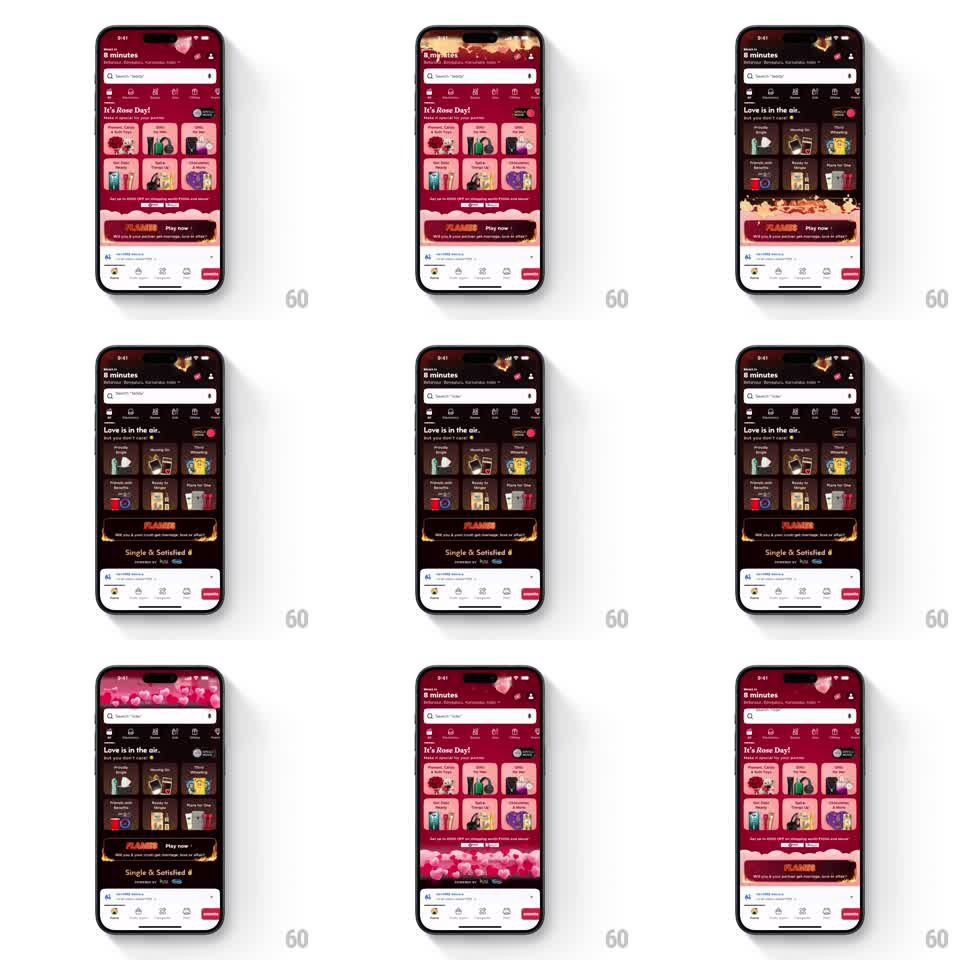

Media
Frame-by-frame

Rebuild this animation 1:1: Blinkit's mode switch - toggling between single and couple modes re-themes the entire home screen (pink "It's Rose Day!" vs dark "Love is in the air.") while heart particles rain down over the whole app.

Rebuild this animation 1:1: Blinkit's mode switch - toggling between single and couple modes re-themes the entire home screen (pink "It's Rose Day!" vs dark "Love is in the air.") while heart particles rain down over the whole app.
## Integration
Integration: stack-agnostic spec - springs given as stiffness/damping, timed motions as duration + curve; map every value to your framework and animation library of choice.
## Scene
Grocery home: delivery header ("Delivery in 8 minutes", location), search bar, category icon row, promo grid of themed cards, a "FLAMES / Play now" game banner, bottom section ("Single & Satisfied" copy), tab bar. Mode A: pink/rose theme. Mode B: dark moody theme with the same layout re-skinned.
## Motion spec
Pattern: full-app theme crossfade + particle rain, ~1.5s.
- Toggle tap: the theme crossfades section by section from top to bottom (each region 300ms fade, staggered 80ms downward) - header, search, categories, promo grid, banner.
- 20-30 heart particles (pinks and reds, 6-14px) spawn across the top edge and fall with sway (sinusoidal +-20px) and slow rotation, fading near the bottom; they overlay all content.
- Promo card artwork and copy swap inside the same card frames (no layout shift).
- The toggle control itself flips state with a 150ms spring thumb slide.
- Tab bar crossfades last, with the rest of the chrome.
## Calibration
- The stagger sweeps top-to-bottom once; random section order reads as flicker.
- Hearts fall for the whole transition and stop within 300ms of the theme settling - lingering rain feels like a bug.
## Reduced motion
Single global crossfade (300ms), no stagger, no particles.
## Don't miss
- Layout never shifts - every card, label, and button stays pixel-fixed; only colors, artwork, and copy change.
- The particle layer ignores safe areas (falls over the notch and home indicator) but never blocks touches.